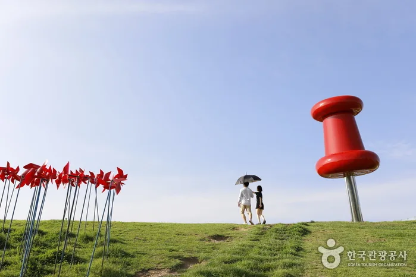
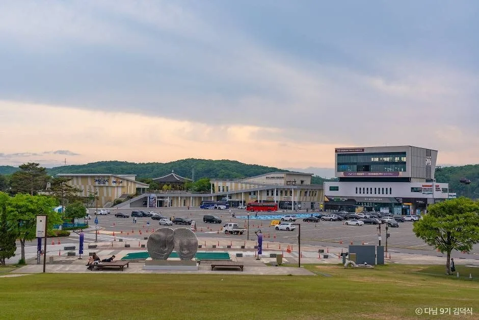
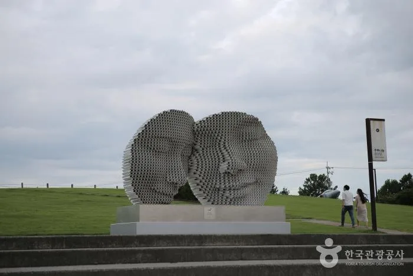
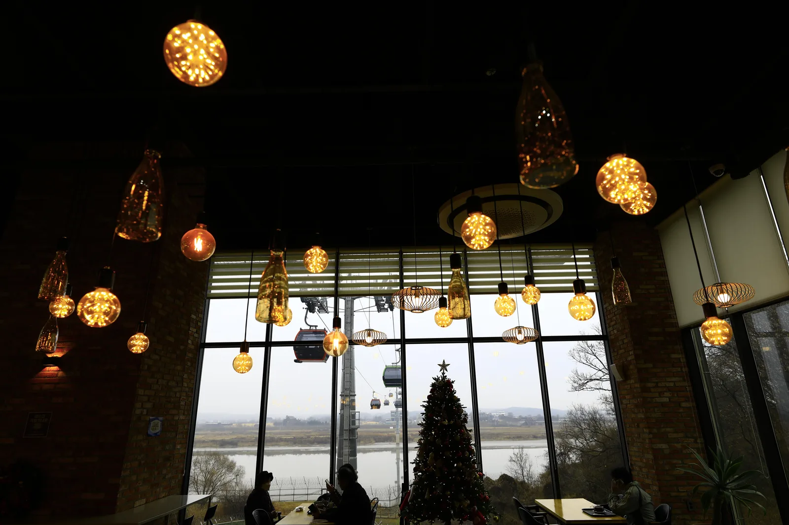
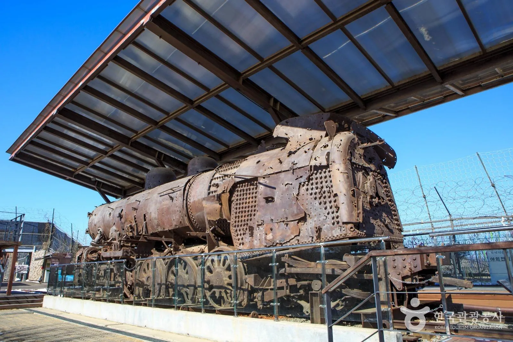
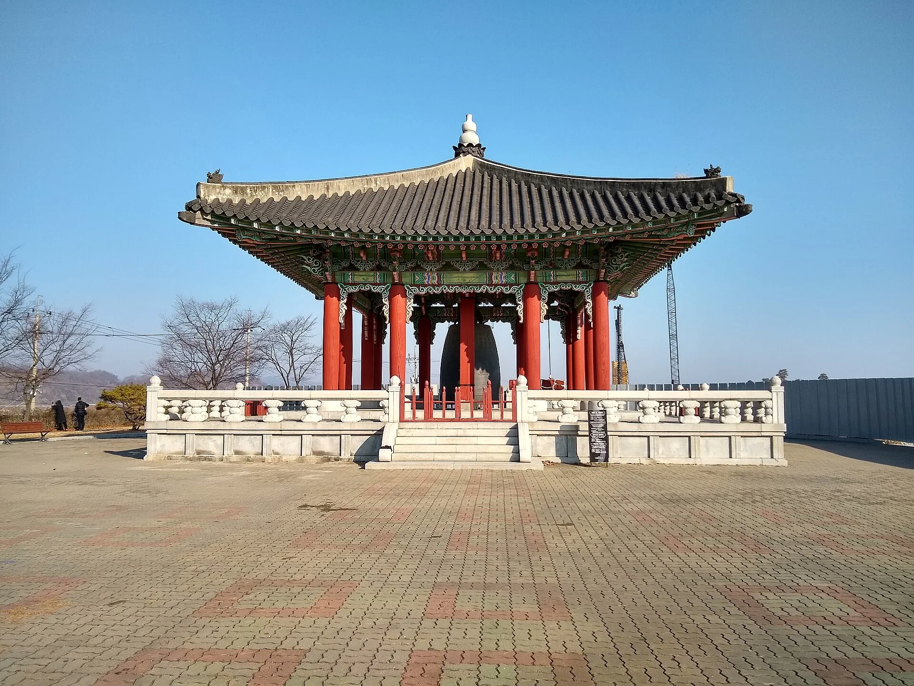
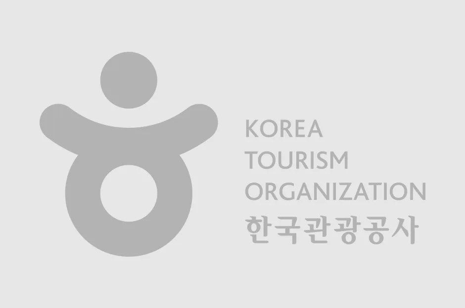
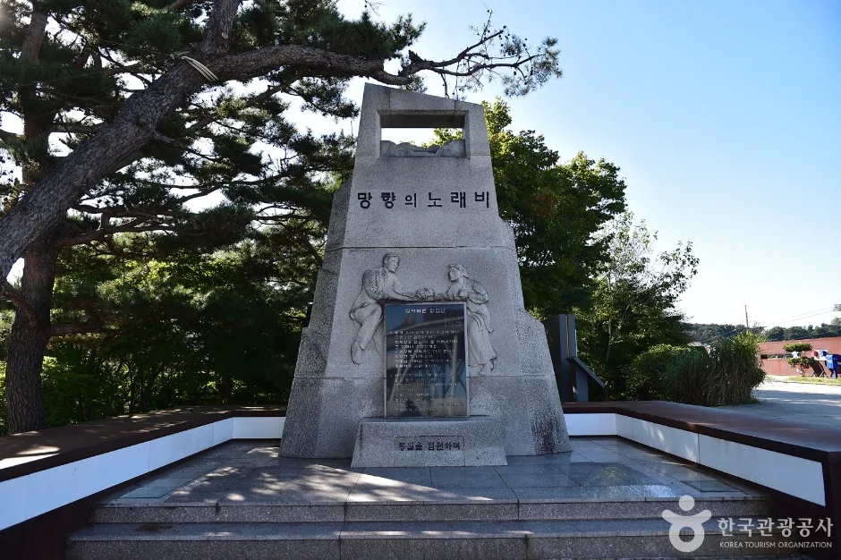

▲ 임진각 평화누리공원 바람의 언덕. 2026 파주포크페스티벌 본공연이 열렸던 잔디광장과 가까운 상시 명소다 ⓒ 한국관광공사

▲ 임진각 평화누리공원 전경. 2026 파주포크페스티벌 본공연 무대가 이 잔디광장 야외무대에 마련됐다 ⓒ 한국관광공사
지난 9월 4일부터 5일까지 이틀간, 경기 파주 문산행복센터와 임진각 평화누리공원이 포크 음악으로 물들었다. 파주문화재단이 주최·주관하고 파주시가 후원한 '2026 파주포크페스티벌'이 '뉴 웨이브(New Wave)'를 주제로 열려 관람객 1만 5,000여 명이 다녀갔다. 이미 막을 내린 축제이지만, 무대가 섰던 임진각 평화누리공원은 사시사철 갈 만한 곳이라 축제를 놓친 사람도 참고할 만하다. 이 글에서는 이번 축제의 구성과 라인업을 정리하고, 평화누리공원의 상시 볼거리·주차·교통 정보까지 함께 짚는다.
📍 먼저 밝힙니다
2026 파주포크페스티벌은 9월 4일(금)~5일(토) 일정으로 이미 종료됐다. 이 글은 다녀온 현장을 정리하고, 파주문화재단이 매년 가을 비슷한 시기에 개최해온 연례행사인 만큼 2027년 재방문을 준비하는 독자를 위한 참고 정보로 작성했다.
1. 전야제와 본공연 — 이틀간의 라인업
축제는 9월 4일 전야제와 9월 5일 본공연, 이틀 구성으로 치러졌다. 전야제는 4일 오후 7시 문산행복센터 대공연장에서 열렸으며 여행스케치, 한동준, 니바이, 한세화가 무대에 올랐다. 본행사는 5일 오후 6시 임진각 평화누리공원 야외무대에서 진행됐고, 김창완밴드·동물원·남궁옥분·이수영·범진·여유와설빈·김지신이 출연해 세대를 아우르는 '넥스트웨이브 스테이지'를 꾸몄다. 손배찬 파주시장은 "올해 파주포크페스티벌은 세대를 넘어 시민 모두가 음악으로 하나 되는 축제의 장이었다"고 평가했다.
| 구분 | 일시 | 장소 | 출연진 |
|---|---|---|---|
| 전야제 | 9월 4일(금) 19:00 | 문산행복센터 대공연장 | 여행스케치, 한동준, 니바이, 한세화 |
| 본공연 | 9월 5일(토) 18:00 | 임진각 평화누리공원 야외무대 | 김창완밴드, 동물원, 남궁옥분, 이수영, 범진, 여유와설빈, 김지신 |
2. 입장료 무료, 관람은 '웨이브존'과 '바이브존'으로

▲ 평화누리공원의 드넓은 잔디언덕. 본공연 관람은 간이의자석 '웨이브존'과 돗자리를 펴는 '바이브존'으로 나뉘어 진행됐다 ⓒ 한국관광공사
축제는 전석 무료로 운영됐다. 관람 방식은 두 가지로 나뉘었는데, 간이의자석이 마련된 '웨이브존'과 별도 예매 없이 돗자리를 깔고 자유롭게 즐기는 잔디밭 '바이브존'이다. 파주시민에게는 선예매 혜택이 주어져 좋은 자리를 미리 확보할 수 있었다. 무대가 평화누리공원의 드넓은 잔디언덕 위에 섰던 만큼, 라이브 공연과 탁 트인 잔디 풍경을 함께 즐길 수 있었다는 것이 현장을 다녀온 관람객들의 공통된 반응이다.
3. 축제 놓쳤어도 갈 만한 곳 — 평화누리공원 상시 명소

▲ 임진각 평화 곤돌라. 민간인 통제구역을 가로질러 임진강 건너 캠프 그리브스까지 왕복 1.7km를 오간다 ⓒ 한국관광공사
축제 시즌이 아니어도 평화누리공원 일대는 볼거리가 많다. 약 3,000개의 색색 바람개비가 돌아가는 '바람의 언덕'은 평화누리를 대표하는 포토 스폿이자 드라마·광고 촬영지로도 자주 쓰인다. 국내 최초로 민간인 통제구역을 가로지르는 임진각 평화 곤돌라는 임진강을 사이에 두고 남측 임진각과 북측 캠프 그리브스를 왕복 1.7km 구간으로 연결하며, 탑승 중 철조망과 감시초소 등 분단의 흔적을 가까이서 볼 수 있다. 이 외에도 실향민들이 북녘 가족을 향해 절을 올리는 망배단, 1953년 국군 포로 1만 2,773명이 귀환하며 이름 붙여진 자유의 다리, 6·25 전쟁 당시 피격된 증기기관차 전시물 등 분단과 평화를 주제로 한 시설이 14만 평 부지에 걸쳐 있다.

▲ 임진각에 전시된 증기기관차. 6·25 전쟁 당시 폭격을 맞은 흔적이 고스란히 남아 있다 ⓒ 한국관광공사
1층에는 스마트 전시 시스템을 갖춘 DMZ 종합안내센터 'DMZ NOW'가, 3층에는 임진강 건너 북녘 땅을 조망할 수 있는 전망대가 마련돼 있다. 임진각 관광지 정보는 공식 홈페이지에서 자세히 확인할 수 있다. 바로가기

▲ 임진각의 평화의 종. 21톤 무게에 21계단을 두어 21세기를 상징하며, 2000년 새천년을 기념해 세워졌다 ⓒ Wikimedia Commons (Lance Vanlewen, CC BY-SA 4.0)
4. 셀피 명당과 자전거 코스

▲ 바람의 언덕은 평화와 '셀피'의 명당으로도 불린다. 탁 트인 잔디 언덕과 바람개비가 어우러져 사진 촬영지로 인기가 높다 ⓒ 한국관광공사
평화누리공원은 걷기뿐 아니라 자전거로 둘러보기도 좋다. 잔디광장 둘레를 따라 완만한 순환 코스가 이어져 있어, 대여 자전거로 임진각 일대를 한 바퀴 도는 코스가 가족 단위 방문객에게 특히 인기다. 30,000평 규모의 잔디밭과 어린이 놀이터도 함께 있어, 축제가 없는 평일이라도 소풍 삼아 방문하기 좋다.

▲ 자유의 다리 인근에 세워진 망향의노래비. 분단과 실향의 아픔을 기리는 여러 기념 조형물이 임진각 일대에 자리해 있다 ⓒ 한국관광공사
5. 자차로 간다면 — 주차와 대중교통, 무엇이 유리한가
임진각 관광지 주차장은 약 1,500대를 동시에 수용할 수 있는 대형 주차장으로, 오전 8시부터 오후 8시까지 운영된다. 요금은 경차 1,000원, 소형차 2,000원, 중형차 3,000원, 대형차 5,000원으로 차급별로 나뉘어 있다. 1,500면 규모라 평상시 주차난 걱정은 크지 않지만, 축제나 연휴처럼 방문객이 몰리는 시기에는 오전 일찍 도착하는 편이 안전하다. 다만 전기차 급속·완속 충전기 설치 여부는 임진각 관광지 공식 안내에서 별도로 확인되지 않아, 전기차로 방문할 계획이라면 무공해차 통합누리집(ev.or.kr)이나 충전소 검색 앱에서 파주 문산·임진각 인근 충전기를 사전에 확인해두는 것이 안전하다.
대중교통으로는 경의중앙선 임진강역에서 내려 도보 약 10분이면 임진각 관광지에 닿고, 임진강~도라산 구간 셔틀도 운행돼 자가용 없이 접근이 어렵지 않다. 다만 임진각 일대가 14만 평 규모로 넓게 펼쳐져 있고 바람의 언덕·평화 곤돌라·망배단 등을 자전거나 도보로 옮겨 다녀야 하는 만큼, 평상시 방문이라면 주차 요금이 저렴하고 면수도 넉넉한 자차가 동선상 유리하고, 축제·연휴 주말처럼 혼잡이 예상되는 날에는 경의중앙선을 이용하는 편이 대기 시간을 줄이는 길이다.
✅ 파주포크페스티벌·임진각 여행, 이것만은 확인하세요
· 2026 파주포크페스티벌은 9월 4~5일 일정으로 이미 종료(관람객 1만 5,000여 명, 전석 무료, 연례행사)
· 전야제는 문산행복센터, 본공연은 임진각 평화누리공원 야외무대
· 관람은 간이의자석 '웨이브존'과 잔디밭 '바이브존'으로 구분
· 축제와 별개로 바람의 언덕·평화 곤돌라·망배단·자유의 다리는 상시 개방
· 주차장은 약 1,500면(08:00~20:00), 경차 1,000원·소형 2,000원·중형 3,000원·대형 5,000원
· 전기차 충전기는 별도 확인 어려움, 방문 전 충전 앱으로 인근 충전소 확인 권장
· 평상시엔 자차, 축제·연휴 주말엔 경의중앙선 임진강역(도보 10분)이 더 원활
6. 정리
2026 파주포크페스티벌은 세대를 아우르는 라인업과 무료 관람이라는 문턱 낮은 구성으로 이틀간 임진각 평화누리공원을 채웠다. 축제 자체는 막을 내렸지만, 무대가 섰던 잔디광장과 바람의 언덕, 평화 곤돌라 등 임진각 일대의 상시 명소는 언제든 방문할 수 있다. 파주문화재단이 매년 가을 비슷한 시기에 개최해온 연례행사인 만큼, 다음 회차를 노린다면 파주문화재단 공식 홈페이지의 공지를 미리 확인해두는 편이 좋다.